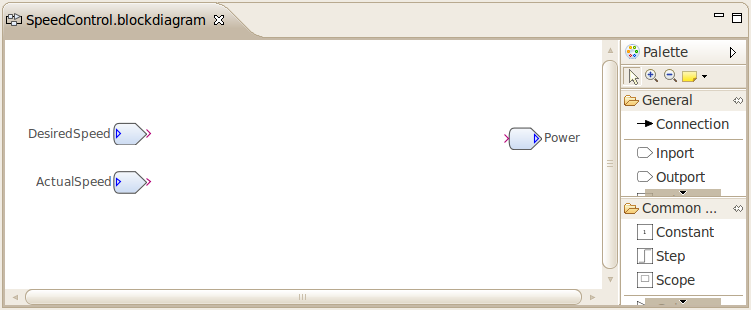
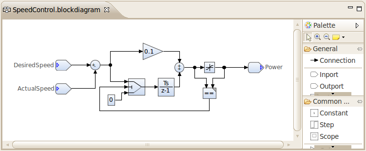

| Generating C Code | ||
|---|---|---|
| | |
| Creating and Simulating a Damos Model | Structuring Models using Subsystems | |
In this topic you will learn how to generate C code from a Damos model and how to integrate the generated C code in existing applications. We assume that you read the previous topic and know how to create a basic Damos model.
The example model will be a simple PI controller-based cruise control with an anti-windup circuit. The inputs of the controller will be the desired speed and the actual speed. The output value (i.e. engine power) will be limited to a value between 0.0 and 1.0 (0% to 100%). The anti-windup circuit is needed to prevent the integrator to windup when the maximum output power is reached.
To create the example model:
The block diagram should look as follows:

You may ask, why do we need these Inports and Outports? As we will see later, those blocks will represent the interface of our system in the generated code.
Next, we add the following block to the block diagram:
0.100.075(1/s)1 and lower limit of 0==) operatorAfter connecting the blocks, the block diagram should look as follows:

Important: Before we can generate code from the model, we must specify the sample time for model:
0.1(s) into the Sample Time (second) field.The other blocks will automatically inherit the timing constraint from the Sum block. If you forget to set this property, you will get an error stating that the sample time could not be resolved for certain blocks when invoking the code generator or simulator.
To generate code from a Damos model, we need to create a generator configuration. To create the generator configuration:
After clicking Finish, the new generator configuration file with the extension .dconfig will be opened in a text editor. It should have the following contents:
package cruisecontrol
import damos.codegen.*
import damos.codegen.c.*
configuration GenerateCruiseControl {
select generator DefaultGenerator {
projectName = "CruiseControl"
sourceFolder = "src-gen"
systemSourceFile = "CruiseControl.c"
}
system CruiseControl {
prefix = "CruiseControl_"
//propagate computation {
// map real() to float64
// map int() to int32
//}
}
}
The projectName and sourceFolder properties specify the target project and source folder, respectively. If you want to generate the code into another project or folder, you can change those properties accordingly.
To start the code generation process, right-click on the generator configuration file (in our example GenerateCruiseControl.dconfig) and select Generate Code. The target source folder should now contain a C header file (.h) and a C source file (.c).
The public interface of the generated code is defined in the header file. It consists of two functions:
CruiseControl_initialize(void) function, which must be called only once, and theCruiseControl_execute(const CruiseControl_Input *input, CruiseControl_Output *output) function, which must be invoked periodically.The input and output parameters of the execute function are pointers to structures containing a member variable for each Inport and Output, respectively. Before invoking the execute function, the member variables of the input structure must be set (e.g. from sensor data). After returning from the execute function, the results can be read from the member variables of the output structure for further processing (e.g. new actuator value).
A simplified application may look as follows:
void cruiseControlTask(void) {
CruiseControl_Input input;
CruiseControl_Output output;
CruiseControl_initialize();
for (;;) {
input.desiredSpeed = getDesiredSpeed();
input.actualSpeed = getActualSpeed();
CruiseControl_execute(&input, &output);
setEnginePower(output.power);
}
}
Note: Damos allows you to provide target generators for specific systems. In this case you do not need to write the glue code for accessing the hardware. See the topic Concepts for more information on target generators.
|  | |
| Creating and Simulating a Damos Model | Structuring Models using Subsystems |